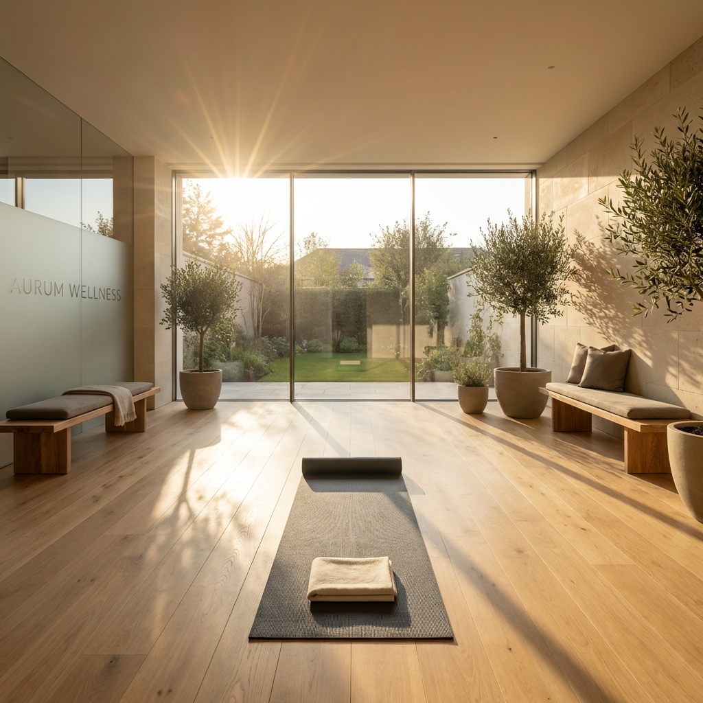

春夏換季，熟齡女性的夜間降溫儀式：睡好、不靠藥、不心煩
給被春夏悶熱打亂睡眠節奏的你。從環境、飲食、沐浴到睡前習慣，用台灣讀者熟悉的做法，幫自己找回一整夜的深層休息。

為什麼春夏夜間降溫對熟齡女性特別重要
進入 40 歲後，身體調節體溫的能力會慢慢改變。尤其在更年期前後，核心體溫的日夜落差可能變小，晚間不容易降溫，就會干擾入睡。春夏的潮濕悶熱讓這種情況更明顯，很多人會覺得胸口、後頸或手心熱烘烘，一躺下就更煩躁。
身體要進入深層睡眠，核心體溫需要下降大約 0.3 到 0.5 度。如果外在環境太熱，或身體散熱機制不順暢，大腦就沒辦法順利「關機」。比起硬躺或開很冷的冷氣，更有效的做法，是從傍晚開始，幫身體慢慢降溫，讓睡眠節奏自然跟上季節變化。
第一步：從傍晚開始調整環境溫度
很多台灣家庭習慣睡前才開冷氣，但這時候牆壁、家具、床墊都還蓄著白天吸進的熱氣，體感溫度降得很慢。建議在下午五點到七點之間，打開窗戶讓空氣對流，同時開電扇往外吹，先把屋內熱氣排出去。
睡前一小時，把臥室冷氣設定在 26 到 27 度，搭配循環扇對著牆角吹，讓整個空間均勻涼爽，而不是只有出風口很冷。對熟齡女性來說，直吹冷風反而容易讓肩頸僵硬、半夜被冷醒，舒適的「微涼感」才是重點。
- 傍晚先開窗、開電扇往外吹，排掉屋內熱氣
- 睡前一小時開冷氣，設定 26-27 度，搭配循環扇
- 避免冷氣出風口直吹身體，尤其是肩頸與膝蓋
第二步：沐浴不是洗越涼越好
很多人覺得睡前洗冷水澡能降溫，但對熟齡身體來說，冷水刺激反而會讓血管收縮，洗完後核心體溫反彈上升，更難入睡。真正能幫助降溫的，是「溫水澡」或「溫水足浴」。
水溫抓在 38 到 40 度之間，泡 10 到 15 分鐘，讓微血管擴張，身體把深層熱量帶到皮膚表面散掉。離開水之後，體溫會自然下降，這個下降的過程就是最好的「睡眠邀請函」。如果沒有浴缸，用溫水沖小腿和足部，效果也很接近。
第三步：床單、枕頭和睡衣的材質選擇
春夏寢具的重點不在「薄」，在於「透氣」和「吸濕」。天然纖維如亞麻、純棉、天絲，能幫助身體濕氣往外排，不會讓皮膚黏黏的。尤其亞麻有天然的涼感，吸濕排汗又好，很適合台灣春夏。
枕頭可以考慮換成網狀透氣款或涼感記憶棉，後頸是重要的散熱區，這裡保持涼爽，入睡速度會明顯加快。睡衣也建議選寬鬆、無束縛的棉麻材質，避免緊身合成纖維把熱悶在身體裡。
- 寢具優先選亞麻、天絲或高支數純棉
- 枕頭可換涼感或網狀透氣款，幫助後頸散熱
- 睡衣選寬鬆棉麻材質，避免合成纖維
第四步：睡前飲食與飲品的降溫智慧
晚餐太晚吃或吃太重口味，身體消化產熱，會讓核心體溫居高不下。建議春夏晚餐盡量在七點前結束，減少辛辣、油炸和過多蛋白質。
睡前如果想吃點東西，可以喝一小杯室溫的無糖豆漿，或幾口常溫優格。很多人會喝熱牛奶，但春夏可以改成「微溫」就好，避免身體又升溫。含咖啡因的茶、咖啡和巧克力，下午三點後就盡量避開。
有些人會喝冰水降溫，但腸胃受冷後反而可能讓身體為了保暖而加速代謝，結果更難睡。常溫白開水或微溫的洋甘菊茶，是更適合熟齡身體的選擇。
第五步：建立規律的降溫作息，而不是追著天氣跑
身體喜歡規律。春夏日照變長，晚上七點天還很亮，很容易打亂原本的作息。建議即使天還亮，也照預定時間開始「降溫儀式」：關掉頭頂大燈、把手機調成夜間模式、做幾分鐘的緩慢呼吸。
降溫不只是身體的功課，也是大腦的訊號。當你每天都用同一套流程告訴大腦「要準備睡了」，入睡的阻力會慢慢變小。哪怕天氣突然變熱，身體也比較有因應的彈性，不會整個睡眠節奏都亂掉。
- 日照變長也要維持固定入睡時間
- 睡前 30 分鐘啟動降溫儀式：暗燈、緩慢呼吸、放下手機
- 讓身體習慣「規律」而非追著天氣調整
FAQ
夏天冷氣開整晚還是睡不好，問題出在哪？
冷氣開太冷反而可能讓身體為了保暖而收縮血管，半夜容易醒。建議設定在 26 到 27 度，搭配循環扇讓空氣均勻流通。另外，如果寢具不透氣或睡衣太緊，身體局部還是會悶熱，影響睡眠深度。
更年期熱潮紅影響睡眠，降溫方法有用嗎？
夜間降溫儀式可以減輕熱潮紅的困擾，但需要更全面的做法。除了環境降溫，建議避免晚餐吃辛辣、酒精和咖啡因，床邊準備一件乾的棉質上衣和毛巾，半夜出汗後可以快速更換。如果情況嚴重，還是要諮詢婦產科或家醫科，不要只靠生活調整硬撐。
睡前洗溫水澡真的比冷水澡好嗎？
對，溫水澡能讓微血管擴張，幫助身體把核心熱量帶到表面散掉。離開水之後，體溫會自然下降，這個降溫過程會促進睡意。冷水澡則讓血管收縮，洗完後體溫容易反彈上升，反而更難入睡。
下一步建議
換季睡眠只是第一步。點這裡看更多為熟齡女性整理的身心恢復、瑜伽輕運動與健康節奏文章，幫你把生活調整得更舒服自在。
重要警語
本文為一般健康、運動、飲食、照護、情緒或生活資訊整理，不構成醫療診斷、治療、用藥、營養、心理諮商或個人化訓練建議。若有症狀、慢性病、懷孕、用藥、受傷、睡眠或情緒困擾，請先諮詢合格醫療或相關專業人員，並依自身狀況調整。